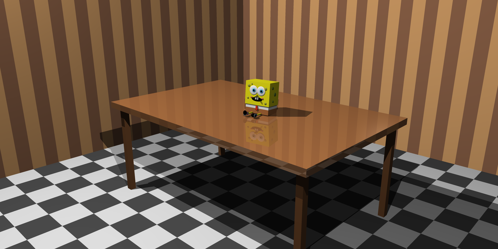
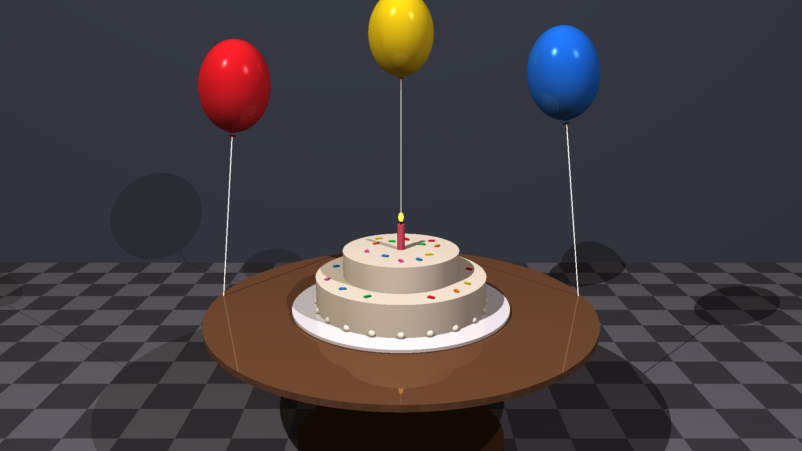

3D Raytracer
C++

A multi-threaded ray tracing engine written from scratch in modern C++.
- Intersection tests for five primitives: spheres, cubes, planes, cylinders and cones.
- Recursive reflection and refraction.
- Tile-based multi-threading that spreads pixel rendering across all CPU cores to cut render time.